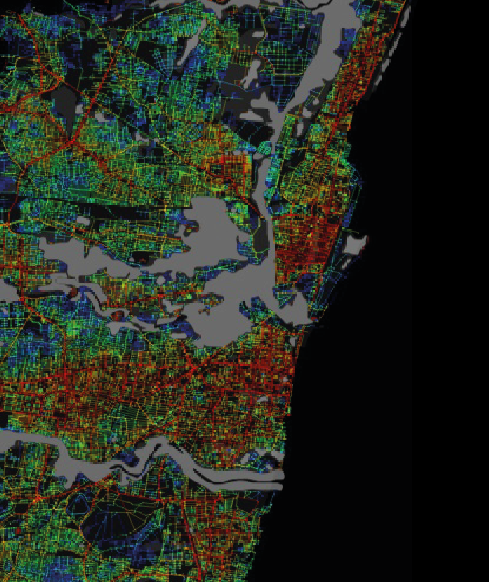
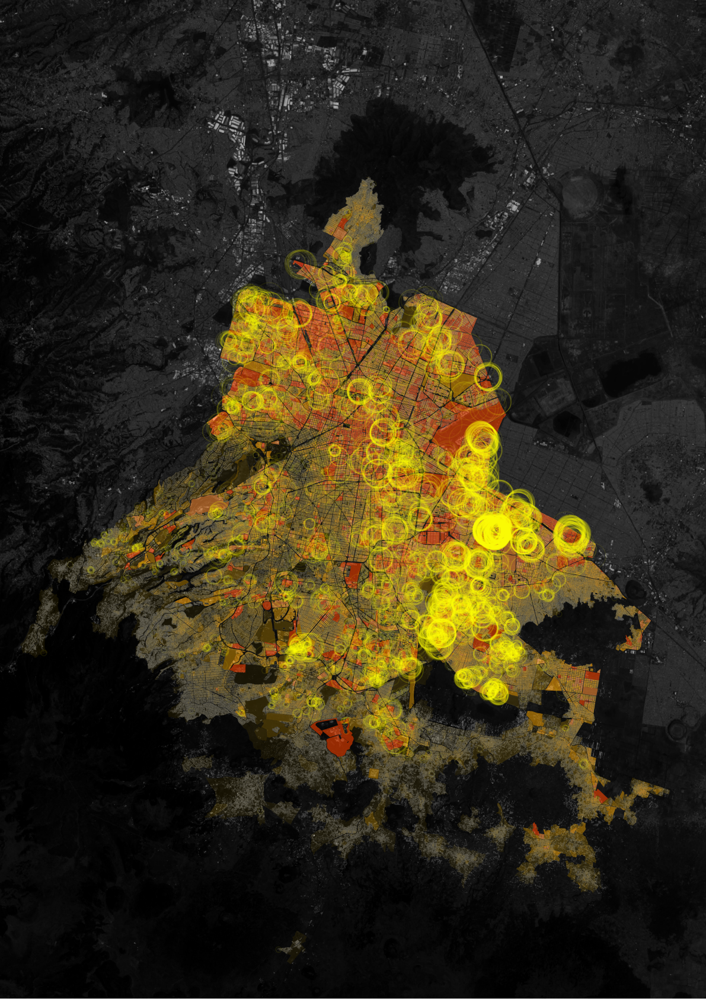
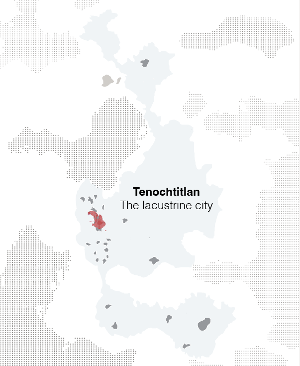
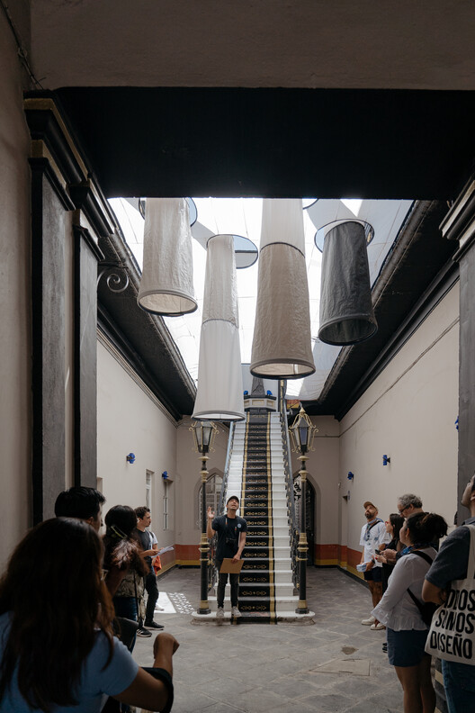
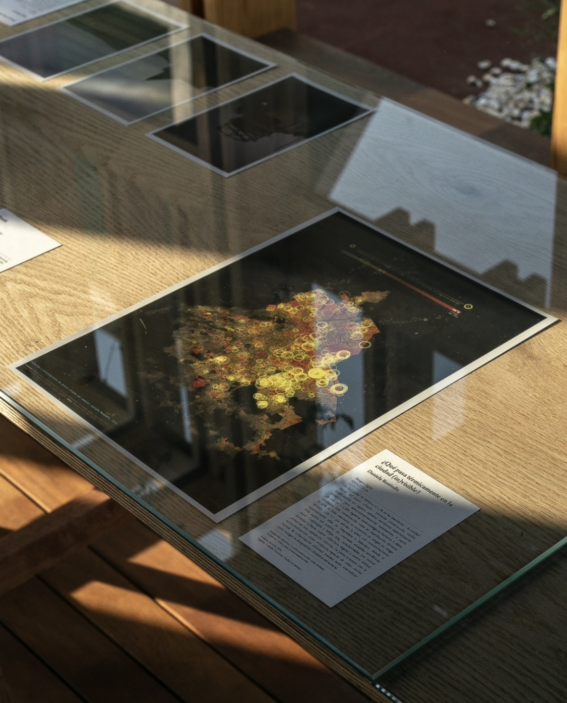
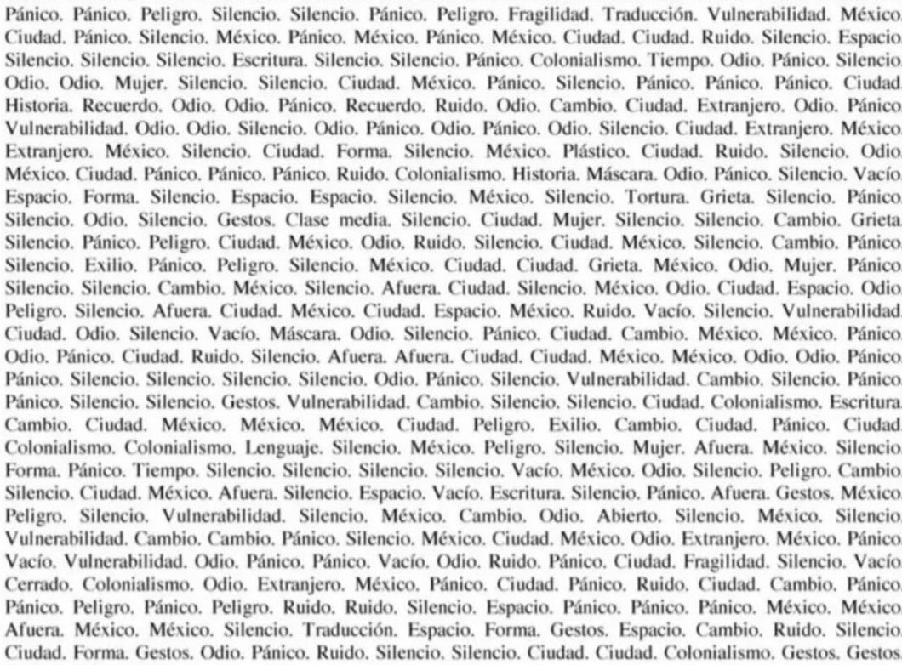

Research projects

Severed Accessibility and Urban Resilience
Chennai, India

Thermal Inequality (Urban heat)
Mexico City, MX

Collective housing typologies in contemporary urban space
Mexico City, MX
Public space installations

Atlas de lo Invisible
Historic Centre of Puebla, MX · 2023

What happens thermally in the invisible city?
La Laguna, MX · 2026

Panic and Danger, a spatial reading
Centro Cultural España, MX · 2026 (upcoming)